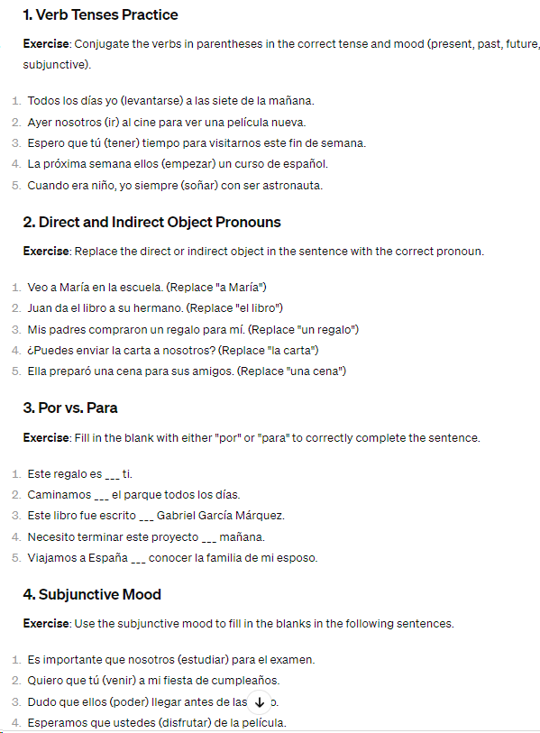
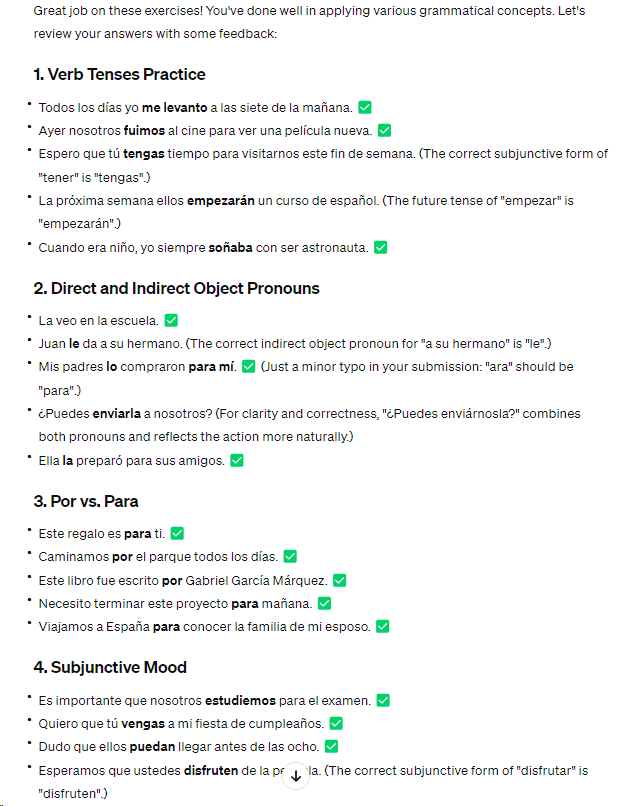

Spanish Support
I spent some time in Colombia last summer taking Spanish classes. Unfortunately, after returning to the states, I have done a terrible job of keeping up with my Spanish skills. I though ChatGPT could serve as a good study partner.
Providing Background
I prompted ChatGPT: “I need to practice my spanish. Can you help me?”
It replied: “Of course, I’d be happy to help you practice your Spanish! Let me know your current level and any specific areas you’d like to focus on.
I said: “I would love to focus on grammar. Can you give me some exercises? I am at level B1.”
It followed up with the following exercise: “Focusing on grammar is a great way to solidify your language skills, especially at the B1 level where you’re transitioning to more complex structures. Here are a few exercises designed to target key grammatical areas for B1 learners. Feel free to write your answers, and I can provide feedback!”
It then provided a series of exercises for me to practice, which was incredibly helpful:

I completed the exercises, and submitted them back to ChatGPT, which was able to correct them for me:

Extra ‘subjunctive’ practice
From my scores, I could see that I needed a bit more help in a particular tense, so I asked ChatGPT: “Can you help me to learn the subjunctive tense in a fun and interactive way?”
It replied: “Absolutely! Learning the subjunctive can be fun, especially when we use interactive and engaging methods. Let’s dive into some activities that will help you get comfortable with the subjunctive mood in Spanish.”
And then it sent through some examples of activities we could play, including:
Subjunctive Story Building We’ll create a story together, sentence by sentence. I’ll start with a sentence in the indicative mood, and you’ll reply with a sentence that uses the subjunctive mood based on my prompt. Then, I’ll continue the story from your response, alternating between the indicative and subjunctive. This will help you practice using the subjunctive in various contexts.
Subjunctive Song Challenge Songs are a fantastic way to learn the subjunctive because they often express emotions, doubts, and desires—perfect for the subjunctive mood! Here’s how we can make it interactive:
- Find a Spanish Song: I’ll provide a few lines from a popular Spanish song that uses the subjunctive. Your task will be to identify the verbs in the subjunctive mood and why they’re used (wish, emotion, doubt, etc.).
- Sing Along: If possible, try to listen to the song and sing along with the lyrics you’ve studied. This will help reinforce the pronunciation and rhythm of the subjunctive forms.
Subjunctive Role-Playing Role-playing different scenarios is a great way to practice the subjunctive mood in a fun and practical way. Here’s a scenario for you:
Scenario: You’re planning a surprise party for a friend and discussing plans with another friend. Use the subjunctive to express your hopes, needs, or doubts about the party preparations.
These all seemed like really great ideas to help me practice!
Subjunctive Song Challenge
I thought the song challenge would be most interesting, so I prompted the system to start that one.
It replied:“Fantastic choice! Music not only makes learning enjoyable but also helps with memorization and understanding of grammatical structures in context. Let’s start with a few lines from the song”Ojalá” by Silvio Rodríguez, a classic that extensively uses the subjunctive mood. The song’s title itself, “Ojalá,” is a wishful expression meaning “hopefully” or “I wish.” Here are a couple of lines from the song:
“Ojalá que las hojas no te toquen el cuerpo cuando caigan para que no las puedas convertir en cristal. Ojalá que la lluvia deje de ser milagro que baja por tu cuerpo.”
Your Task: - Identify the verbs in the subjunctive mood in these lines. - Explain why the subjunctive is used here (considering that the subjunctive expresses wishes, doubts, the unknown, or hypothetical situations). - Feel free to give it a go, and then we can discuss your answers!
I replied: “Subjunctive verbs are toquen and deje. The represent the wishes of the singer: for the leaves not to touch the body, and for the rain to stop”
It responded: “Exactly right! You’ve identified the subjunctive verbs correctly and understood their use in the context of expressing wishes, which is a primary function of the subjunctive mood in Spanish. Let’s delve a bit deeper into each example:
toquen (from “tocar”): The subjunctive “toquen” is used to express the singer’s wish for the leaves not to touch the body. This is a hypothetical situation or desire, which is why the subjunctive is the correct mood to use.
deje (from “dejar”): Similarly, “deje” is used in a wishful context, expressing the hope that the rain stops being a miracle. It reflects the singer’s desire for a change in how the rain interacts with the body, again highlighting the subjunctive’s role in expressing wishes, hopes, and desires.
The use of the subjunctive in “Ojalá” by Silvio Rodríguez is a beautiful example of how this mood can convey deep emotions and desires, adding a layer of depth and feeling to the lyrics. Songs like this can be very powerful tools in understanding and internalizing the use of the subjunctive mood in Spanish.
If you’re interested in exploring more songs or other activities to practice the subjunctive or any other aspect of Spanish, feel free to let me know!
This was a really great way to get some quick Spanish practice in! It is good to know that ChatGPT has enough understanding of various languages to provided easy tutoring support.